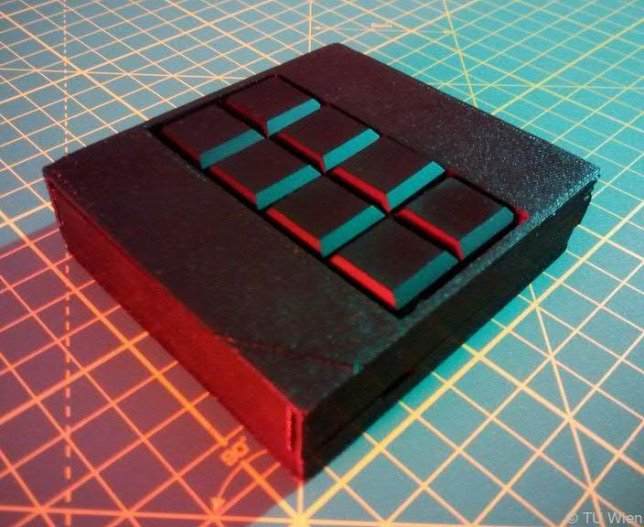

Így néznek ki a macOS hátterek a valóságban
Andrew Levitt fotós és YouTuber összeállt Jacob Phillips videóssal és Taylor Gray tájképekre szakosodott fotóssal, hogy megnézzék a macOS alapértelmezett háttérképeinek helyszíneit.
továbbVakok számára fejlesztettek okostelefon-billentyűzetet
Vakok számára fejlesztettek okostelefon-billentyűzetet a bécsi Műszaki Egyetem (TU) kutatói. A telefonok hátára illeszthető szerkezet segítségével a Braille-írással írók percenként 20 szót gépelhetnek be.
továbbOkosóra gyerekeknek?
Az jutott eszembe, hogy a RendeljKínait keretein belül viszonylag ritkán írunk a fiatalabb korosztálynak szóló termékekről, pedig egyértelműen lenne rá igény. Éppen ezért kikerestem az érdekesebb, gyerekeknek szánt okosórákat, és láss csodát, a Xiaomi ilyet is gyárt MITU néven.
továbbAz 5G ellen tüntettek Svájcban
Az 5G technológiák hajnalán vagyunk, ám az új telekommunikációs szabvány terjedése nem zajlik zökkenőmentesen. Az egyik első ország, ahol elindulhattak az 5G hálózatok, Svájc lett, ám az európai országban már most ellenállásba ütközött a fejlesztés, olyanok miatt, akik szerint az 5G károsan befolyásolja az emberi egészséget, illetve a környezetet.
továbbNem bújhatsz el a kínai Nagy Testvér 500 megapixeles kamerája elől
A Kínában évek óta rohamtempóban épülő, IT-alapú autoriter rendszer újabb eszközt vet be az állampolgárok minél hatékonyabb megfigyelése érdekében. Az arcfelismerő (sőt, testtartás-, járásfelismerő) rendszerek eddig is bámulatos hatékonysággal szolgálták a kínai hatóságokat...
tovább